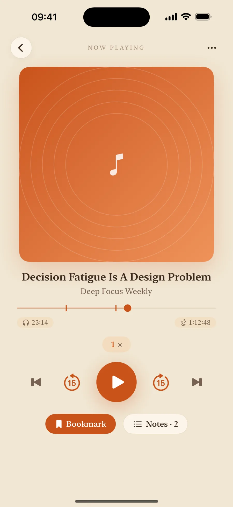
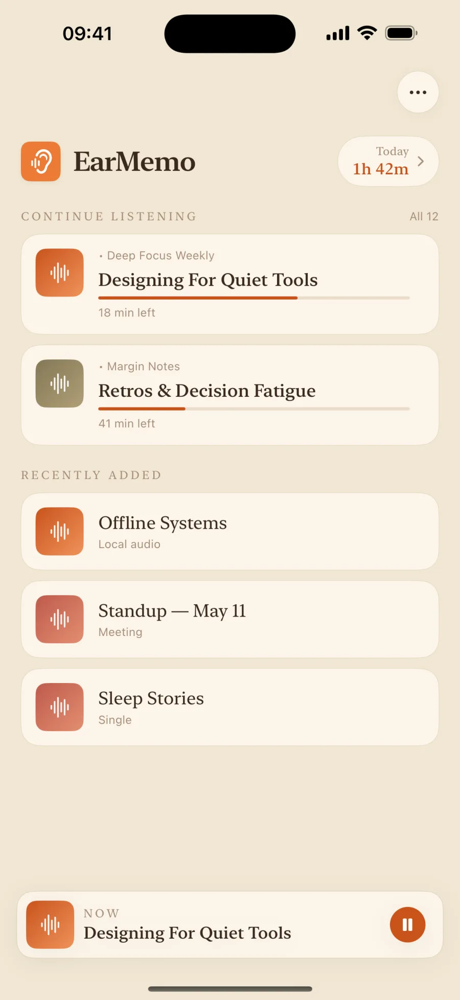
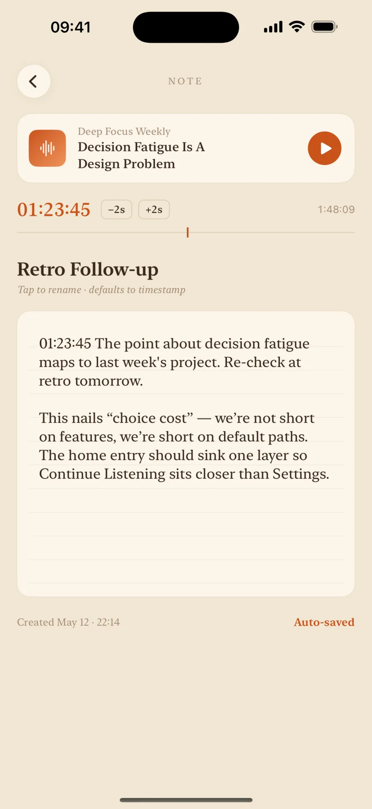
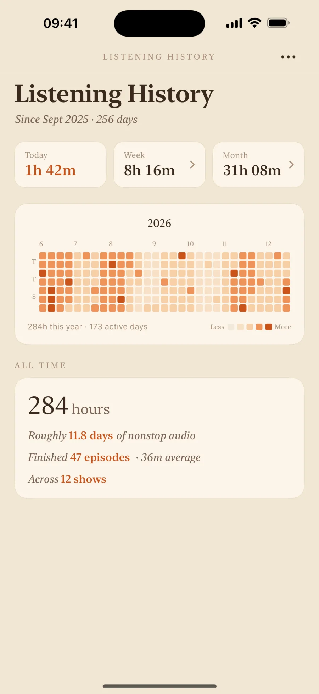
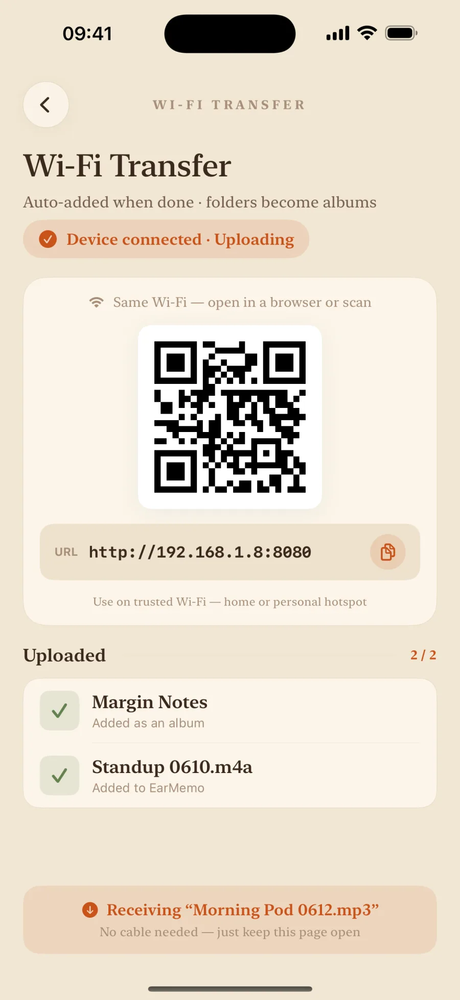

Listen to what you already own.
A local-first iOS player for podcasts, audiobooks, lectures, and voice recordings. No cloud service, no account, no tracking — your library stays yours.

Why EarMemo
Every other player fights for your attention.
EarMemo does the opposite.
No recommendation feed, no autoplay into the next episode, no list you can never finish. EarMemo keeps the long things you've downloaded — the ones nobody else organizes for you — quietly in one place. Stop on the sentence you want to keep; come back tomorrow, and you're still on it.
Your library
Everything you're listening to, in one place
One screen for the few things you're in the middle of. Each one remembers its progress and what's left — press it and you're back, no hunting, no "where was I?"
- Continue Listening resumes to the exact second
- Files group into albums you can browse and reorder
- A "today's listening" figure right at the top

Notes
Notes that jump back
Hear something worth keeping? Stop and write a line. Every note is auto-saved with a timestamp marker — tap it later and you scrub straight back to that second. What you heard finally stays.
- Timestamped notes — one tap jumps to the line
- Grouped per album and episode, easy to review
- Export any time, into your own notes app

Listening history
See your whole year of listening
Today, this week, this year — EarMemo counts every minute you spend on long-form audio. Not to compete with anyone; just to turn "I feel like I'm always listening" into a number you can actually see.
- A yearly heatmap — a year of listening at a glance
- Daily, weekly, monthly + cumulative hours
- All on-device — never uploaded, never analyzed

Import
Get your files in, fast
Open a web address on your computer and drag audio straight into EarMemo over local Wi-Fi — no cable, no cloud. Or send files in from Messages, Mail, and Files with the iOS Share Sheet.
- Wi-Fi transfer from any browser — no cable or cloud
- Share Sheet from Messages, Mail, Files
- mp3 · m4a · flac · aac · wav, plus mp4 / mov audio-only

Everything else you'd want
Sleep timer
Live Activity countdown on the Dynamic Island and Lock Screen.
Background & Lock Screen
Full transport controls from Control Center and the Lock Screen.
Variable speed
Speed up or slow down without the audio turning to chipmunks.
Bookmarks
One-tap jump back to any saved point — essential for long content.
Share Sheet import
Send files in from Messages, Mail, Files, or any app with a share action.
Wide format support
mp3 · m4a · flac · aac · wav, plus mp4 / mov / m4v played audio-only.
Privacy
Private by architecture, not by promise
EarMemo has no external server. Settings, playback progress, notes, bookmarks, and statistics stay on your device. Optional Wi-Fi Transfer connects your browser directly to EarMemo on the same local network; files never pass through our servers or cloud.
- No data collection
- No third-party SDKs
- No ads, no tracking
- No account, no sign-in
Pricing
One price. Yours to keep.
One-time US$5.99. No subscription, no in-app purchases. Family Sharing supported.
Your library, finally in one focused player.
FAQ
What is EarMemo?
EarMemo is a local-first audio player for iOS, designed for long-form listening: podcasts, audiobooks, lectures, and voice recordings. All of your data — settings, playback progress, bookmarks, notes, and listening statistics — stays on your device. EarMemo has no external server and does not require an account.
Is EarMemo related to the AI study app with a similar name?
No. EarMemo is an offline audio player for iPhone and iPad, made by Fan YANG, for podcasts, audiobooks, lectures, and voice recordings you already own. It is a separate, unaffiliated product from any similarly named AI study, flashcard, or memorization service. EarMemo has no AI features, no account, and no cloud service.
How is EarMemo different from Apple Podcasts or Spotify?
EarMemo plays local audio files you already own — podcasts you've downloaded, audiobooks, lecture recordings, voice memos. It does not stream from a catalog, does not have a subscription, and does not require an account. It is designed for people who want one focused tool for long-form listening from files they control.
Does EarMemo work offline?
Yes. Playback, statistics, notes, bookmarks, and search work without an internet connection, including in airplane mode. Wi-Fi Transfer is optional and only uses the local network when you explicitly open it.
Does Wi-Fi Transfer upload my files to an EarMemo server?
No. When you open Wi-Fi Transfer, EarMemo starts a temporary local web service on your iPhone or iPad. A browser on the same Wi-Fi network connects directly to your device; files do not pass through an EarMemo server or cloud service. Closing the transfer screen stops the local service.
Which audio and video formats does EarMemo support?
EarMemo supports common audio formats including mp3, m4a, aac, flac, and wav. Video files (mp4, mov, m4v) are played audio-only, so you can listen to the soundtrack of a video without watching it.
Does EarMemo collect any data?
No. EarMemo does not collect any user data. There are no third-party SDKs, no analytics, no advertising, and no tracking. All data stays on your device and follows your own iCloud backup if you have iCloud enabled.
Does EarMemo work on iPad?
Yes. EarMemo is a universal iOS app that runs on both iPhone and iPad, with a split-view layout adapted for the larger iPad screen.
Can EarMemo import files from other apps?
Yes. EarMemo integrates with the iOS Share Sheet, so you can send audio or video files into EarMemo from Messages, Mail, Files, or any app that exposes a share action for media files.